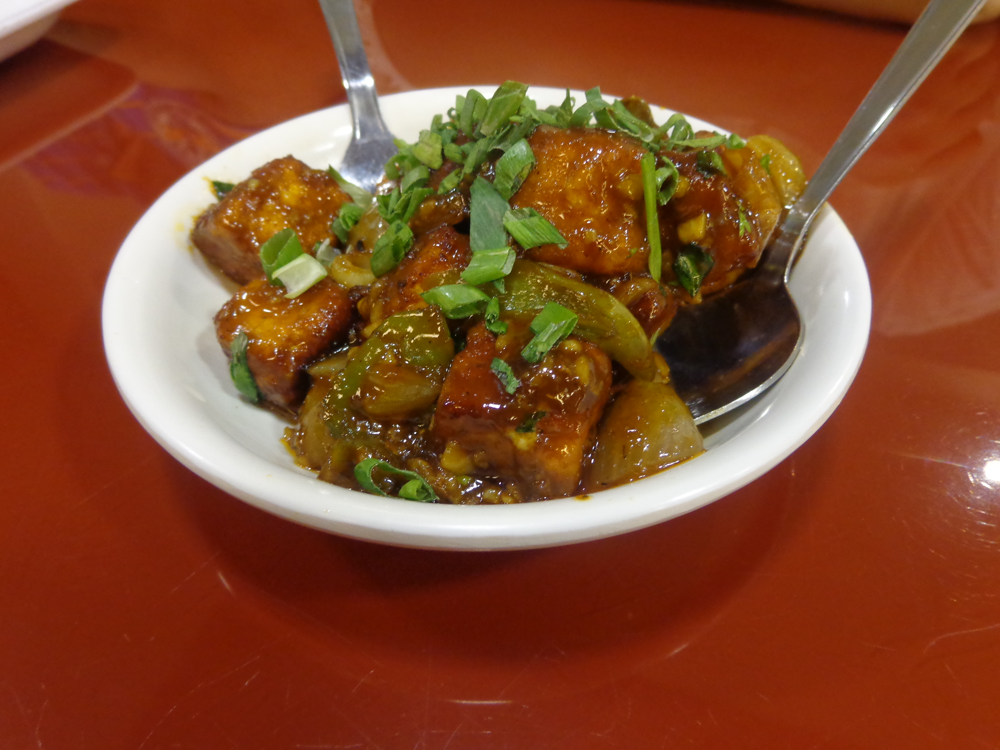

Chilli Paneer is an Indo-chinese dish made with crispy paneer cubes tossed in a spicy , tangy and slightly sweet sauce with onions and capcsicum.
You can make it dry as a starter or semi-gravy for eating with fried rice/noodles. This is my favourite paneer recipe while there are many others like Malai paneer, Kadai Paneer , hyderbadi paneer..
Mix cornflour, maida , chilli powder and salt. Add paneer and a little water. Coat the cubes well-the coating should be thin , not runny.
Heat 1-2 tbsp oil a pan and shallow-fry the paneer on medium high heat untill golden and slightly crispy. Remove and keep aside.
Add soy sauce, ketchup , chill sauce , vinegar , sugar , black pepper and 2-3 tbsp water. Mix and cook for about 30-60 seconds.
Add the fried paneer and toss everything on high heat for 1-2 minutes, coating the paneer with the sauce.
Add the spring onion if availabnle. Serve immediately